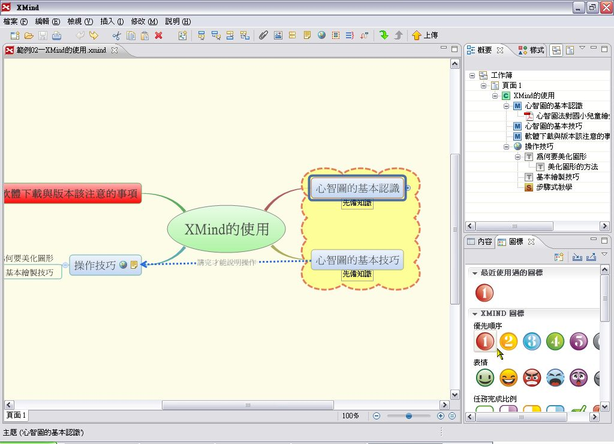
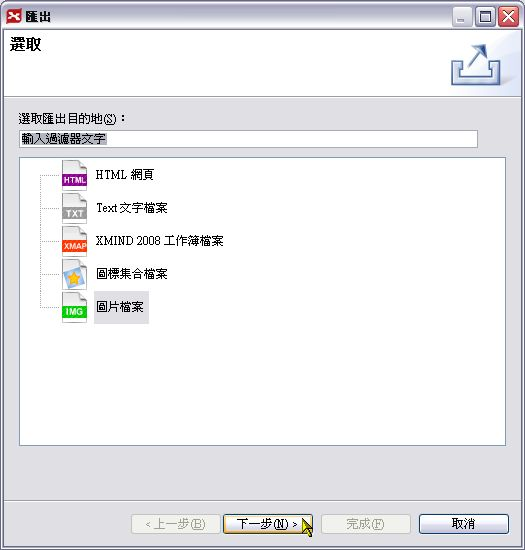

也紀念我們永遠的朋友 李士傑先生（Shih-Chieh Ilya Li）。
開放源碼陣營的思考與企劃新利器 - XMind (4)
＊美化與檔案輸出技巧篇＊（第四篇）
◎ 風格與樣式的應用
風格與樣式，主要是用來美化整體圖形或強調特定重點之用。這些都是 XMind 事先設計好的，簡單的幾個步驟，很快就能製作出活潑好看的心智圖！
按一下功能表的「檢視」＼「風格」。
此時會開啟「風格」面板，在想套用的風格上按二下滑鼠。
整張心智圖就會套用新的風格。
開啟「樣式」面板（點選功能表的「檢視」＼「樣式」），接著點選想要套用樣式的主題，然後在樣式上按二下滑鼠。
所選定的主題就會套用新的樣式。
樣式的套用範圍不侷限於主題，外框、關連和頁面等，也都有專屬的樣式可以使用，大家不妨選擇自己喜歡的來試試看。
◎ 圖標的應用
圖標是一些構圖簡易的表意小圖，適當地運用有助於瞭解內容，並且能讓畫面顯得更加活潑。只是 XMind 的圖標，其運用的範圍只限於主題內，也就是說，它是用來協助瞭解主題內容，或者標示重點、歷程、順序等。
當然，運用之妙，存乎一心，大家使用時，要多多運用巧思喔！
步驟一：

開啟圖標的面板後，點選想加入圖標的主題，接著在要加入的圖標上按一下滑鼠。（如何開啟圖標面板？請按功能表的「檢視」＼「圖標」。）
圖標就會加到主題裡面。在圖標上按一下滑鼠，會出現相關內容的選單，當想要換同一系列的圖標時，只要在選單點選其他的圖標就好，算是蠻方便的。
如果要刪除圖標，可以點選圖標後再按 Delete 鍵，只不過每次點選時都會出現選單，必須把滑鼠移到圖標的外緣，再點一次滑鼠取消選單，這樣子實在有點麻煩。建議大家改用另一個方法，就是在圖標上按滑鼠右鍵，從快顯功能表中點選「刪除」就可以了。
圖標可以加入好幾個，若想要透過清單的方式來加入，可以在主題上按右鍵，從快顯功能表內點選「圖標」，就可以看到所有圖標的內容，從中選擇想要加入的圖標即可。
加入圖標之後，是不是讓人更容易瞭解該主題的性質呢？
◎ 基本的美化技巧
從開始製作到現在，相信大家應該會覺得，套用風格和加入圖標之後的心智圖比較好看（起碼對設計者 Attila 來說是這樣）。通常經過適度的美化之後的心智圖，會讓人比較容易理解和記住內容，若是用來簡報，別人的印象也會比較深刻。
美化的對象，包括背景、框線、文字…等的顏色、大小、粗細等，甚至是直接轉換成其他類型的圖。至於能不能設計的讓大家看了都說好，說真的，關鍵不在於軟體的功能或工具豐不豐富，全在於個人的美學素養。當然，如果只是自己用的，好看的標準就是：自己高興就好啦！
內容面板上，可以設定心智圖的架構、文字格式、外型、連線等，我們先來試試看改變心智圖的架構。點選中心主題後，在內容面板的「架構」攔位上按一下滑鼠，從清單中點選想要使用的圖。
心智圖就轉換成所選的類型。前面也有類似的操作，不過這裡改變的是整個心智圖，前面則只是改變局部。
接著，來修改一下主題之間的連線。按一下「連線」下的欄位，從清單中點選「箭頭曲線」。
〔補充說明〕
有關文字格式設定，其實跟多數的文字處理軟體沒有太大差別（可設定的只會少不會多），在此就不多作說明。
中心主題和主題之間的連線，就會變成有箭頭的模樣（註：箭頭不大，可把圖放大來看）。
接下來我們來修改有關頁面的部份。在主題以外的空白處按一下，取消所有主題或物件的選取，此時「內容」面板上的項目，也會跟著改變為和頁面有關的東西。
我們先來修改背景顏色看看。按背景顏色旁的「設定頁面的背景顏色」鈕，從清單內選擇喜歡的顏色。（如果都不喜歡，可以按「自行定義」來自行配色）
整個背景就會套用新的顏色。至於背景圖片，作法和一般軟體插入圖片的作法差不多（按插入圖片鈕後選擇圖片檔案），在此不贅述。
我們在部份主題內加入了圖標，為了日後方便閱讀起見，可以加入圖例。圖例的意思是告訴人家某個圖標代表什麼意思，顯示出來，有助於他人解讀心智圖的內容。所以這裡我們就在內容面板上勾選「顯示圖例」。
圖例就會顯示在畫面上。我們可以移動圖例的位置，也可以修改圖例的說明文字（在上面按二下滑鼠，就會切換到編輯狀態）。
美化的技巧，不只是個別物件而已，版面也是重要的一環。從前面的操作經過，大家應該會發現，主題不管怎麼移動，都會回到固定的位置（除非變動層級關係）。那該怎麼移動呢？先按住鍵盤的Alt鍵，然後拖曳主題到想要擺放的位置。
主題就會被拖曳到我們希望的位置上了。
〔補充說明〕
想要能隨心所欲的擺放主題的位置，必須要先確定已經做了以下的設定：
按功能表的「編輯」＼「喜好設定」，開啟喜好設定視窗後，在左邊的欄位內點選「圖面」，在右邊的「主題位置」下，確定已經勾選「允許主題放置任意位置」，如此按住 Alt 鍵拖曳主題時才會有效果。
如果要加入額外相關的主題，或者是對整個心智圖下一個標題或定義，可以加入浮動主題。這裡我們想要對於「操作技巧」多作一點說明，因此在頁面上按滑鼠右鍵，從快顯功能表內點選「浮動主題」。
此時浮動主題是「黏」在滑鼠游標上的，移到想擺放的位置上按一下滑鼠，就可以把浮動主題「放」下來。
編修浮動主題的文字內容，方法和主題都一樣。
浮動主題也可當作圖說之用，例如把外型改為氣泡型，然後擺放在某個主題旁邊，就會變得好像漫畫的對話一樣。至於是否要當作裝飾或其他的用途，就有賴大家的創意囉！
◎ 檔案的儲存與匯出
檔案編輯後，是一定要儲存的啦！（好像在講廢話），只是儲存格式的選擇，在 XMind 內只有一種（當然，只有這一種日後能加以編輯），無法直接存成其他的格式。若想要存成不同的格式好做其他應用，只能透過匯出一法了。
若是第一次儲存，可以直接按工具列上的「儲存」鈕。
步驟二：
選擇儲存檔案的資料夾，輸入檔名後按一下「儲存」就可以了。
若要匯出成其他的檔案格式，就按功能表的「檔案」＼「匯出」。
步驟四：

出現「匯出」視窗後，選擇想要匯出的檔案格式，接著按「下一步」。
步驟五：
在視窗上方的「格式」內，可以選擇想要的圖片格式，預設是 JPEG。接著在底下的「至檔案」的右邊，有個「瀏覽」鈕，按一下就可選擇儲存檔案的資料夾。
步驟六：
選擇要存檔的資料夾並輸入檔名後，按一下「儲存」。
回到先前的視窗，「至檔案」右邊的欄位會顯示檔案儲存的路徑。接著按一下「完成」。
此時會開啟作業系統預設的圖片檢視程式，讓我們檢視匯出的圖片。
◎ 匯入其他的檔案
其他一些常見的心智圖軟體，如 FreeMind、MindManager 等的檔案格式，XMind 本身也支援，只是不能直接打開來編輯，必須以匯入的方式載入才能使用。若大家以前用這些軟體製作許多心智圖檔案，因某種緣故改用 XMind 時，可以不用煩惱這些檔案的轉移問題。
步驟一：
按功能表的「檔案」＼「匯入」。
步驟二：
選擇要匯入的檔案類型後，按「下一步」。
步驟三：
選擇儲存檔案的資料夾，點選要匯入的檔案，然後按「開啟」。
步驟四：
選擇匯入後要出現在哪個工作簿，一是到目前編輯中工作簿，一是到新開啟的工作簿內。選好後，按「完成」。
轉換的速度頗快（跟內容的複雜度也有關），結果和原始檔案的外觀不盡然相同，但架構和編排等不會跑掉，算是可以接受。
心智圖的應用很廣，製作的過程也很自由，幾乎可說沒有規則可言（但不代表沒有基本的原則），除了思考、企劃、筆記等，也可用在簡報、流程圖、組織圖上，是個實用性頗大的方法，建議大家可以配合應用軟體，試著和其他領域結合看看，讓自己的智慧發揮到極致！
※ 註：前三期文章，https://www.openfoundry.org/component/option,com_content/Itemid,362/id,1985/task,view/
，https://www.openfoundry.org/component/option,com_content/Itemid,362/id,2010/task,view/ ，https://www.openfoundry.org/component/option,com_content/Itemid,144;isletter=1/id,2033/task,view/
您也許有興趣閱讀以下文章:
- 開放源碼陣營的思考與企劃新利器 - XMind (3) - 2009-03-25
- 開放源碼陣營的思考與企劃新利器 - XMind (2) - 2009-03-14
- 開放源碼陣營的思考與企劃新利器 - XMind (1) - 2009-02-18
專欄總覽


E-Mail：contact@openfoundry.org Address：台北市南港區研究院路2段128號 中央研究院資訊科學研究所 . 隱私權條款. 使用條款